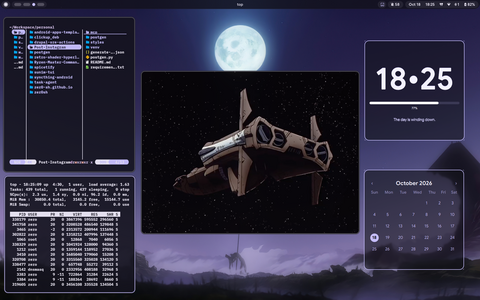
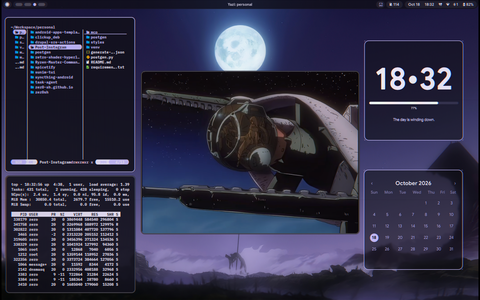
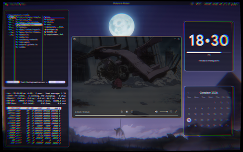
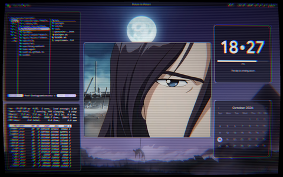
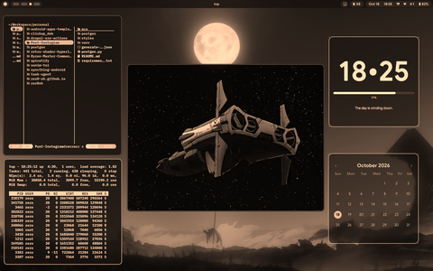
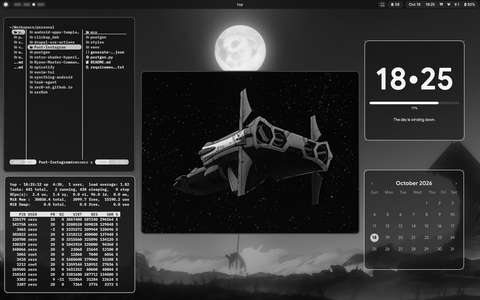
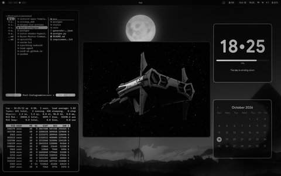
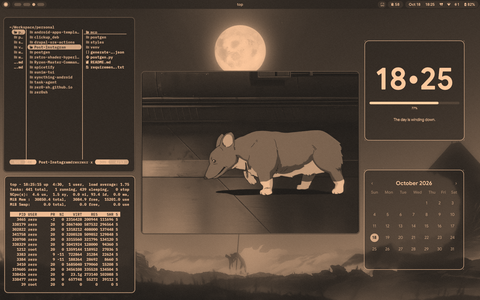
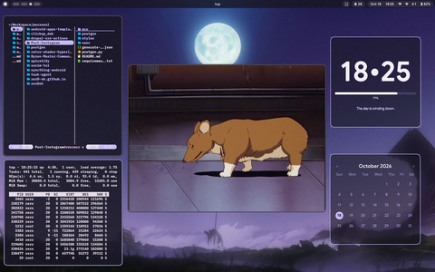

Screen Shaders & Post-Processing
Hyprland provides real-time, hardware-accelerated post-processing screen shaders via OpenGL / Vulkan fragment shaders applied through decoration:screen_shader. The environment features an interactive visual carousel in Quickshell, keyboard shortcuts, and a collection of retro and stylistic color filters.
Interactive Shader Carousel
The primary interface for browsing and applying shaders is the visual carousel integrated into the Quickshell floating launcher.
- Dedicated Shortcut:
SUPER + Bopens or toggles the shader carousel directly. - Control Center Integration: The circular Shader tile in the Quickshell Control Center displays the current active filter label and opens the carousel with a single click.
- Launcher Command: Type
/shaderor/filterin the floating launcher. - Navigation: Scroll with mouse wheel / touchpad, or navigate using Left / Right arrow keys, Tab, Shift+Tab, and press Enter to apply immediately.
Available Shaders Gallery
The system includes 9 calibrated GLSL shaders located in ~/.config/hypr/shaders/.
1. Shader Off (Passthrough)
- File:
off.glsl - Description: Default unshaded passthrough state with neutral color reproduction and zero performance overhead.

2. Sony Trinitron
- File:
trinitron.glsl - Description: Faithful simulation of Sony Trinitron CRT aperture grille monitors. Features continuous vertical RGB subpixel phosphor stripes, flat vertical axis with subtle horizontal curvature, classic tungsten tension damping wires at 33% and 66% screen height, and rich black contrast.

3. CRT Soft
- File:
crt-soft.glsl - Description: Modern, subtle retro CRT filter optimized for programming and reading. Features ultra-fine horizontal scanlines (1100 frequency), balanced radial chromatic aberration (+5%), gentle edge vignetting, and minimal barrel distortion.

4. CRT Retro
- File:
crt.glsl - Description: Classic curved arcade/tube monitor effect. Features noticeable barrel distortion, prominent scanlines, radial RGB dispersion towards the corners, and phosphor luminance glow.

5. Sepia Vintage
- File:
sepia.glsl - Description: Warm, golden-brown tint reminiscent of 1930s early film photography with balanced luminance.

6. Black & White
- File:
bw.glsl - Description: Clean, high-contrast monochrome conversion using luminance weights
vec3(0.299, 0.587, 0.114).

7. Film Noir
- File:
noir.glsl - Description: Dramatic, moody monochrome with high-gamma contrast (
pow(gray, 1.4)), pronounced perimeter vignette, and subtle procedural film grain.

8. Vintage
- File:
vintage.glsl - Description: Faded, aged paper color grading mixed with warm earth tones and subtle noise texture.

9. Vivid
- File:
vivid.glsl - Description: Enhanced color saturation and heightened vibrance for colorful wallpapers and multimedia playback.

Keybindings & Shortcuts
| Shortcut | Action | Command / Target |
|---|---|---|
SUPER + B |
Open / Toggle Shader Carousel | quickshell ipc call shaderpicker toggle |
SUPER + CTRL + 1 |
Apply Sepia Vintage | ~/.config/hypr/scripts/filter sepia |
SUPER + CTRL + 2 |
Apply Black and White | ~/.config/hypr/scripts/filter bw |
SUPER + CTRL + 3 |
Apply Film Noir | ~/.config/hypr/scripts/filter noir |
SUPER + CTRL + 4 |
Apply Vintage | ~/.config/hypr/scripts/filter vintage |
SUPER + CTRL + 5 |
Apply Vivid | ~/.config/hypr/scripts/filter vivid |
SUPER + CTRL + 0 |
Disable Shader (Off) | ~/.config/hypr/scripts/filter off |
Architecture & Directory Layout
~/.config/hypr/
├── shaders/ # GLSL shader files
│ ├── off.glsl
│ ├── trinitron.glsl
│ ├── crt-soft.glsl
│ ├── crt.glsl
│ ├── sepia.glsl
│ ├── bw.glsl
│ ├── noir.glsl
│ ├── vintage.glsl
│ └── vivid.glsl
└── scripts/
└── filter # CLI backend and compositor dispatcher
~/.config/quickshell/
├── assets/shaders/ # 480x300 preview thumbnails for the carousel
└── modules/launcher/
├── Launcher.qml # Floating carousel controller and mode switch
└── ShaderCard.qml # Card delegate with hover and active states
How to Create and Add New Shaders
Follow this quick step-by-step guide to create, register, and integrate a new shader into both Hyprland and the Quickshell UI.
Step 1: Write the GLSL Fragment Shader
Create a new .glsl file in ~/.config/hypr/shaders/<shader-name>.glsl. Hyprland shaders use OpenGL ES 3.20 syntax:
#version 320 es
precision highp float;
in vec2 v_texcoord;
uniform sampler2D tex;
out vec4 fragColor;
void main() {
vec4 pix = texture(tex, v_texcoord);
vec3 col = pix.rgb;
// Apply custom color transformations here
// Example: Invert colors
col = 1.0 - col;
fragColor = vec4(col, pix.a);
}
Step 2: Register the Shader in the Filter Script
Open ~/.config/hypr/scripts/filter and add a new case matching your shader name:
Update the usage message at the bottom of the script to include your new filter keyword.
Step 3: Generate the Preview Thumbnail
Apply the shader and take a clean 480x300 px snapshot using hyprctl and grim:
# Apply your new shader
hyprctl keyword decoration:screen_shader "$HOME/.config/hypr/shaders/myshader.glsl"
# Capture and resize thumbnail
grim -o eDP-1 /tmp/raw_thumb.png
magick /tmp/raw_thumb.png -resize 480x300^ -gravity center -extent 480x300 "$HOME/.config/quickshell/assets/shaders/myshader.png"
rm -f /tmp/raw_thumb.png
Step 4: Add the Entry to Quickshell Launcher
Open ~/.config/quickshell/modules/launcher/Launcher.qml and append your shader to the shadersList array:
{
id: "myshader",
name: "My Custom Shader",
filterName: "My Custom Shader",
desc: "Short visual summary of the effect",
thumb: shaderThumbDir + "myshader.png"
}
Step 5: Reload and Verify
Reload Quickshell to pick up the changes:
Press SUPER + B to verify that your new shader card appears with its thumbnail, title, and description, and activates on click or Enter.
Related Documentation
- Hyprland Keybindings: Keybindings reference for window management and tool toggles.
- Quickshell Control Center: FeatureTile toggles and ambient quick settings.
- Hyprland Architecture: Modular configuration hierarchy.